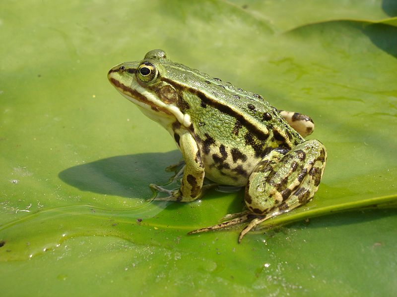

Teichfrosch
Pelophylax esculentus
Wenn Moorwanderer entlang des Lehrpfades grün-schwarz gefärbten, sehr ruffreudigen und wenig scheuen Froschlurchen begegnen, handelt es sich fast immer um diese Art. Sie verbringen nahezu ihr ganzes Leben im oder am Wasser. Während der Wintermonate ruhen Wasserfrösche im Grundschlamm von Teichen und Gräben.